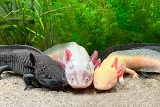
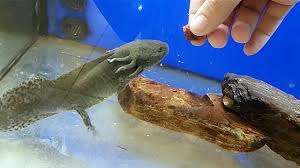
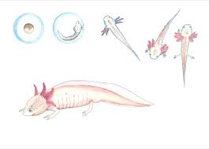

Información General
El ajolote (Ambystoma mexicanum) es, sin duda, el anfibio más extraordinario originario de México, floreciendo en los icónicos lagos de la cuenca del Valle de México, particularmente en Xochimilco. Este asombroso animal, conocido también como el "monstruo de agua", no solo pertenece a la prestigiosa familia de las salamandras, sino que se erige como el ejemplo por excelencia de neotenia. A diferencia de la vasta mayoría de anfibios, los ajolotes logran alcanzar la madurez sexual sin someterse a la metamorfosis completa que típicamente transforma a otras especies en animales terrestres, demostrando así su excepcional adaptabilidad evolutiva.
El ajolote, en su magnificencia, mantiene su forma larval a lo largo de toda su existencia, conservando impresionantes características juveniles como branquias externas, una cola aplanada perfectamente diseñada para la natación y una piel suave y permeable que optimiza el intercambio de gases. En lugar de evolucionar hacia una salamandra adulta terrestre, como lo hacen otras especies de su familia, el ajolote domina su hábitat acuático, donde prospera, se alimenta y se reproduce con notable eficacia. Esta adaptación evolutiva única no solo lo distingue, sino que lo eleva como una de las criaturas más fascinantes y especiales dentro del vasto y diverso reino animal.
Este animal fue descubierto en el siglo XVIII, por los aztecas que lo encontraron al llegar al valle de México, fue en 1615 que apareció en un libro de naturaleza, pero fue hasta 200 años después que se le otorgo el nombre científico de Ambystoma mexicanum
Es una especie que se ha vuelto caracteristica del pais, pues a tomado popularidad en estos ultimos años, cuando se comenzaron a lanzar algunas campañas para proteger a la especie de la extincion. A continuacion, presentaremos informacvion detallasda sobre esta especie, sobre su impacto en el pais y mas datos interesantes
Conservación
Los ajolotes,viven en los canales de Xochimilco, están en peligro crítico de extinción. Su hábitat ha sido gravemente afectado por la urbanización, la contaminación del agua y la introducción de especies invasoras, como la carpa y la tilapia, que compiten por el alimento y se comen a los ajolotes jóvenes. Esto ha reducido mucho su población.
Para evitar que desaparezcan, se han creado programas de conservación. En Xochimilco, algunas organizaciones están trabajando para mejorar la calidad del agua y restaurar su hábitat natural. También hay proyectos de cría en cautiverio, donde los ajolotes se reproducen en zoológicos y laboratorios para, en un futuro, poder liberarlos en su hábitat.
Sin embargo, aunque estos esfuerzos son importantes, proteger el hábitat natural del ajolote es lo más esencial para su supervivencia. Esto implica mantener limpios los canales de Xochimilco y controlar las especies invasoras. Todos estos esfuerzos juntos podrían ayudar a salvar a esta especie tan única y especial para México.
a continuacion, algunas de las causas con mayor impecto para su extincion
- Pérdida de Hábitat: El crecimiento de la Ciudad de México ha afectado gravemente los lagos y canales donde viven los ajolotes. Antes, los ajolotes habitaban en varias áreas del Valle de México, pero la urbanización ha reducido su hábitat natural a los canales de Xochimilco, que cada vez son más pequeños.
- Contaminación del agua:
- Especies invasoras: Se han introducido especies como la carpa y la tilapia en los canales donde viven los ajolotes. Estos peces compiten por el mismo alimento que los ajolotes y, además, se comen a sus crías y huevos, lo que reduce su población. La presencia de estas especies invasoras ha sido un gran problema para la supervivencia de los ajolotes
- comercializacion En el pasado, los ajolotes eran capturados para ser vendidos como mascotas o usados en medicina tradicional, lo que también contribuyó a la disminución de su población.
- Cambio climático:El cambio climático está alterando los patrones de lluvia y las temperaturas, lo que afecta el nivel de agua en los canales. Los ajolotes necesitan un ambiente acuático muy específico para vivir, y los cambios en las condiciones del agua pueden hacer que su hábitat sea menos habitable.
- Pérdida de vegetación acuática:Los ajolotes usan las plantas acuáticas para esconderse y protegerse de los depredadores, además de que estas plantas ayudan a mantener la calidad del agua. Con la disminución de la vegetación en los canales, los ajolotes pierden refugio y se exponen a más peligros.
Gracias a estos motivos, los ajolotes están en peligro de extinción. Si no se hacen esfuerzos de conservación que protejan su hábitat y controlen la contaminación y las especies invasoras, esta especie tan especial podría desaparecer en poco tiempo.
Hábitat
Los ajolotes viven en el agua, en un lugar muy especial llamado los canales de Xochimilco, que están en la Ciudad de México. Estos canales son como ríos pequeños y tranquilos, con agua fresca que no se mueve muy rápido. A los ajolotes les gusta vivir en estos canales porque el agua tiene muchas plantas donde pueden esconderse de los depredadores y donde cazan su comida. Ellos comen insectos, lombrices y pequeños peces que encuentran en el agua.
Antes, los ajolotes vivían en muchos lagos y canales de la región, pero con el paso del tiempo, la ciudad creció mucho y el hábitat de los ajolotes se redujo. Ahora, la mayor parte de los lagos y ríos donde vivían han desaparecido. Xochimilco es uno de los últimos lugares donde pueden vivir. Sin embargo, su hogar no es tan seguro como antes, porque el agua está sucia debido a la basura y a los desechos que las personas tiran.
Además, en estos canales ahora hay peces que no son de ahí, como la carpa y la tilapia, que se comen a los ajolotes más pequeños o les quitan su comida. Por eso, cada vez hay menos ajolotes en su hogar.
Para que los ajolotes no se extingan, es muy importante cuidar los canales de Xochimilco. Hay que mantener el agua limpia, proteger las plantas que crecen en el agua y asegurarnos de que no haya especies invasoras que los pongan en peligro. Así, los ajolotes podrán seguir viviendo en su hábitat natural.
Alimentación
Alimentación de los Ajolotes Los ajolotes son animales carnívoros, lo que significa que comen otros pequeños animales. En su hábitat natural, que son los canales de Xochimilco, se alimentan de lombrices, insectos, larvas y pequeños peces que encuentran en el agua. Los ajolotes tienen una forma muy interesante de comer: en lugar de masticar, abren la boca muy rápido y succionan a su presa, como si la aspiraran. De esta manera, se comen todo de una vez. Cuando los ajolotes viven en cautiverio, como en acuarios o zoológicos, las personas que los cuidan les dan una dieta especial. Pueden alimentarse de pequeñas porciones de carne, lombrices y hasta de un tipo de comida especial en forma de pellets, que está hecha para que tengan todos los nutrientes que necesitan para crecer y mantenerse sanos. Es importante que los ajolotes coman bien, ya que si no tienen suficiente comida, pueden enfermarse o debilitarse. Además, si el agua está contaminada, puede afectar a los animales de los que se alimentan, lo que también pone en peligro su salud. Por eso, en la naturaleza y en cautiverio, es importante que su entorno esté limpio y que haya suficiente comida para ellos.
Reproducción
La reproducción de los ajolotes es muy interesante y diferente a la de muchos otros animales. Los ajolotes son una especie que se reproduce en el agua y, aunque son anfibios, no pasan por la metamorfosis completa como las ranas. Esto significa que siempre se mantienen en su forma juvenil, pero aun así pueden reproducirse. El proceso comienza cuando el macho corteja a la hembra realizando movimientos alrededor de ella. Durante el cortejo, el macho deposita unos paquetes llamados espermatóforos en el fondo del agua, que contienen su esperma. Luego, la hembra recoge estos espermatóforos con su cloaca, que es una parte de su cuerpo que usan para reproducirse, y de esta manera sus óvulos son fertilizados. Después de la fecundación, la hembra pone entre 300 y 1,000 huevos, dependiendo de su tamaño y su salud. Estos huevos son pegajosos y los coloca sobre las plantas acuáticas o en el fondo del agua, donde quedan protegidos hasta que eclosionan. El proceso de incubación dura aproximadamente entre 10 y 14 días, dependiendo de la temperatura del agua. Cuando los huevos se abren, nacen pequeñas larvas que ya tienen branquias externas, parecidas a las de los adultos, pero son mucho más pequeñas. Lo sorprendente de los ajolotes es que no necesitan convertirse en adultos para reproducirse, ya que alcanzan la madurez sexual mientras todavía tienen forma de larva. Este fenómeno se llama **neotenia**, lo que significa que pueden reproducirse sin pasar por la metamorfosis completa. A lo largo de su vida, si las condiciones del agua son adecuadas, los ajolotes pueden reproducirse varias veces. Sin embargo, la reproducción de los ajolotes en la naturaleza se ha visto muy afectada por la contaminación y la pérdida de su hábitat. En cautiverio, los ajolotes suelen reproducirse con más éxito, ya que se les proporcionan las condiciones adecuadas para que puedan hacerlo sin problemas. Estos programas de reproducción en zoológicos y laboratorios son esenciales para ayudar a conservar la especie y asegurar su futuro.
Curiosidades
- Capacidad de regeneración increíble: Los ajolotes son famosos por su habilidad para regenerar partes de su cuerpo. Si pierden una pata, la cola, o incluso parte de su corazón o cerebro, pueden regenerar esos órganos o extremidades sin cicatrices. Esta capacidad ha llamado la atención de los científicos, que estudian a los ajolotes para entender cómo aplicarlo a la medicina
- Neotenia: A diferencia de otros anfibios, los ajolotes no pasan por una metamorfosis completa. Aunque nacen como larvas, mantienen sus características juveniles, como las branquias externas, durante toda su vida. Aun así, son capaces de reproducirse en este estado, lo cual es bastante raro en el mundo animal.
- Su gran importancia cultural El ajolote no solo es importante por sus habilidades biológicas, sino que también tiene un papel destacado en la cultura mexicana. En la mitología mexica, el dios Xólotl, que se transformaba para evitar su sacrificio, fue representado como un ajolote. Debido a esto, el ajolote ha sido visto como un símbolo de vida y transformación.
- Cantidad de tonalidades Aunque en la naturaleza suelen ser de color marrón oscuro o negro con manchas, en cautiverio se pueden encontrar ajolotes albinos (blancos con ojos rojos), dorados o de color rosa claro. Estos colores se deben a mutaciones genéticas y a la cría selectiva.
- Varias formas de respirar Los ajolotes tienen tres formas de respirar: usan sus branquias externas, su piel (que es permeable y les permite absorber oxígeno del agua) y, además, pueden salir a la superficie para usar sus pulmones y respirar aire. Esta adaptabilidad es una ventaja para sobrevivir en diferentes condiciones.
- Gozan de gran longevidad A pesar de su tamaño pequeño, los ajolotes tienen una vida relativamente larga para un anfibio. En cautiverio pueden vivir entre 10 y 15 años si se les cuida bien.
- peculiar forma de comer Los ajolotes comen pequeños invertebrados, insectos y peces. En lugar de morder su comida, abren rápidamente la boca y succionan a su presa, como si fueran una aspiradora. Esto les permite capturar comida sin necesidad de masticar.
- Su grave situacion Aunque son populares como mascotas y en laboratorios, los ajolotes en estado salvaje están en peligro crítico de extinción. Los canales de Xochimilco, su hábitat natural, están contaminados y llenos de especies invasoras. Por eso, su conservación es un tema urgente. Estas curiosidades hacen que el ajolote sea no solo un animal único en el mundo, sino también un símbolo importante de la biodiversidad y la cultura mexicana.
Galería
Ajolotes